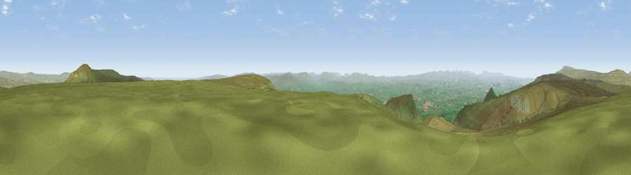

Viewpoint near Hilton
#3351 in England · top 5% of its area beats it · near HiltonWhere it is
The exact computed spot (NY 78075 22275). Click the marker for map links.
The view, rendered

A 360° render of this exact spot computed from the terrain model, tree cover and land cover — summer colours, afternoon light, calibrated against photographs of famous viewpoints. Real trees, hedges and buildings will differ in detail.
The panorama
Grey silhouette: terrain skyline in each direction (720 bearings, Earth curvature and refraction included). Dashed green: skyline with trees (+15 m) and buildings (+8 m) as obstacles. Blue strip: how far the ground is visible on each bearing.
Where the view opens
Wedge length = distance to the farthest visible ground on that bearing (vegetation-aware). Rings at 10, 25 and 50 km.
What fills the view
96% grassland · 2% woodland · 1% cropland
Angular shares of the visible panorama (visual magnitude), not map area. Landscape diversity 0.08 (0–1 Shannon).
Key numbers
More beautiful places nearby
The staircase of upgrades: each row has a higher view potential than everything closer. Driving times are estimates from straight-line distance, calibrated against real road routing — check an actual route before setting out.
| Place | Direction | Drive | Score |
|---|---|---|---|
| Viewpoint near Hilton | SSE · 1 km | ~3 min | 74.3 |
| Viewpoint c10485_7606 | NE · 3 km | ~7 min | 75.6 |
| Mickle Fell | NE · 3 km | ~8 min | 75.8 |
| Great Dun Fell | NW · 12 km | ~23 min | 77.8 |
| Little Dun Fell | NW · 13 km | ~24 min | 78.4 |
| Cross Fell | NW · 15 km | ~27 min | 78.7 |
| Fell Head | SSW · 27 km | ~44 min | 78.8 |
| Calders | SSW · 28 km | ~45 min | 79.0 |
54.59518, -2.34084 · source: screening · position refined by local search. Computed location — check access rights before visiting.